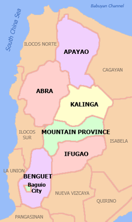

Cordillera Administrative Region

Cordillera Administrative Region, also known as Cordillera Region, is an administrative region in the Philippines, situated within the island of Luzon. Wikipedia
Provinces: show 6: Abra; Apayao; Benguet; Ifugao; Kalinga; Mountain Province
Municipalities: 75
Cordillera Administrative Region Covid Cases
Region
Cases
Recovered
Deaths
Population
Cordillera Administrative Region
41,594
39,489
744
1,722,006